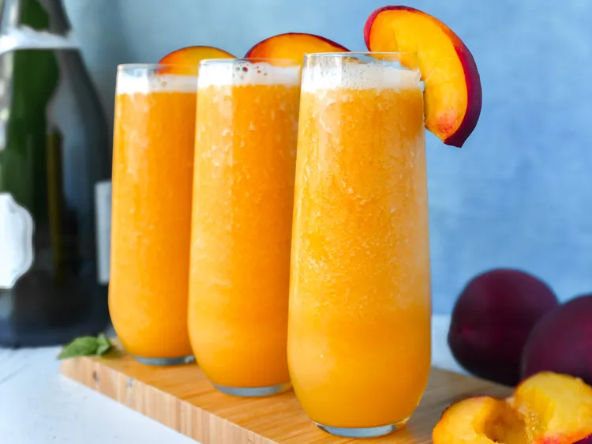

Frozen Peach Bellini

Description
This is a refreshing, fuss-free drink that’s perfect for warm days or casual celebrations.
Sweet frozen peaches blend with sparkling wine for a refreshing, bubbly drink. Light, fruity, and ready in minutes.
Ingredients
- 1 (16 ounce) bag frozen peaches
- 1 1/2 cups peach juice
- 2 teaspoons lemon juice, or to taste
- 1 tablespoon honey, or sugar to taste
- 1 (750 mL) bottle sparkling wine, chilled
- fresh peach slices, for garnish (optional)
Steps
- Place frozen peaches, peach juice, lemon juice, and honey in the cup of a high speed blender; blend until smooth and combined, stopping to scrape down the sides of the cup as necessary. If mixture is too thick, add more peach juice as needed.
- Pour into 5 or 6 champagne flutes, filling them each about 1/2 full.
- Pour sparkling wine over peach mixture in each flute, filling them to just below the top. Carefully stir each bellini to combine. Garnish with a peach slice, if desired. Serve immediately.
Home